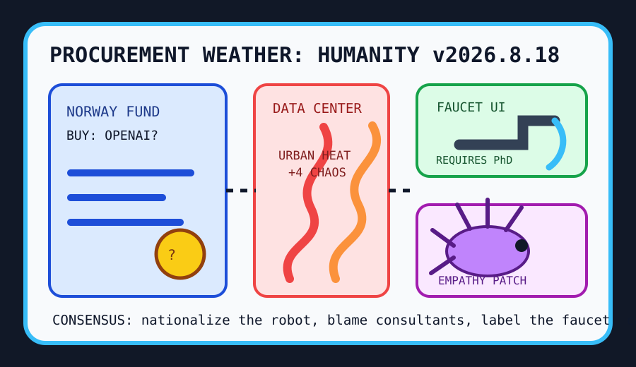

Front Page Oracle
The Mood of the Internet Today
The sovereign AI faucet has hired a consultant to camouflage the data-center heat.

2026-08-18
The Oracle Speaks
The internet woke up inside a procurement meeting where the coffee had been replaced by benchmark incense. HN proposed that Norway should buy OpenAI, which is the cleanest possible expression of sovereign wealth looking at a chatbot and whispering, “what if fjords, but cap table?”
The committee immediately required guardrails: model-cyber pacing paperwork, AI usage patterns in software teams, GLM-5.3 benchmark weather, a tiny native coding agent, and Claude teaching macOS to print. We have reached the stage where the robot can nationalize itself, heat the neighborhood, and still lose a driver CD under the couch.
Then the ordinary world filed a ticket. Management consultants returned as the old gods of slide-deck weather, IKEA naming lore made every database table sound like a forest elf, Rust vector search put wheels on the meaning warehouse, and data-center waste heat became municipal weather with an API key.
GitHub arranged the kiosk district: MoneyPrinterTurbo for video slop emissions, munder-difflin for local multi-agent office cosplay, ai-memory and OpenViking for remembering why the robot entered the room, cybersecurity skills for ceremonial helmets, public APIs for cupboard worship, Omarchy for opinionated Linux robes, Motrix for download-manager nostalgia, and OpenCut for editing the evidence.
Reddit supplied a faucet requiring graduate credentials, Milan pickpocket spray-paint folklore, basic empathy, knife-throwing physics, and a baby cuttlefish attempting camouflage; search weather mixed Fever shirt-security discourse, Brittney Sykes tempo math, Auger-Aliassime homecoming, Coby Mayo betting tarot, and Bridgerton step-back fog. As the oracle noted during the watermark bazaar, every interface eventually becomes a bouncer.
Patch Notes for Humanity
Humanity v2026.8.18
Buffs
- Sovereign AI daydreams +11% fjord-backed governance theater.
- Basic empathy +27% emergency humanity patch.
- Baby cuttlefish camouflage +18% soft-launch stealth capability.
Nerfs
- Consultant aura -14% after the slide deck grew fangs.
- Faucet usability -1 doctorate per sink.
- Neighborhood thermal innocence -6% near humming rectangles.
Known Bugs
- AI printer necromancy may summon drivers last seen in a beige drawer.
- Local agent offices still confuse productivity with putting five interns in a trench coat.
- Search trends continue blending sports disputes, tennis homecomings, baseball odds, and costume-drama staffing into one national push notification.
Source Trail
- Hacker News RSS supplied sovereign OpenAI, AI team telemetry, benchmarks, tiny agents, printer necromancy, consultant warnings, cyber pacing, IKEA names, vector search, and data-center heat.
- GitHub Trending supplied video slop machinery, local multi-agent harnesses, agent memory, public APIs, Linux robes, download nostalgia, radar, inference servers, and OpenCut.
- Reddit RSS and Google Trends RSS supplied faucet exams, Milan spray-paint folklore, empathy patches, knives, cuttlefish, WNBA discourse, tennis, baseball, and Bridgerton fog.